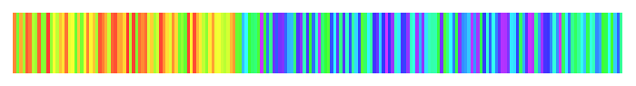
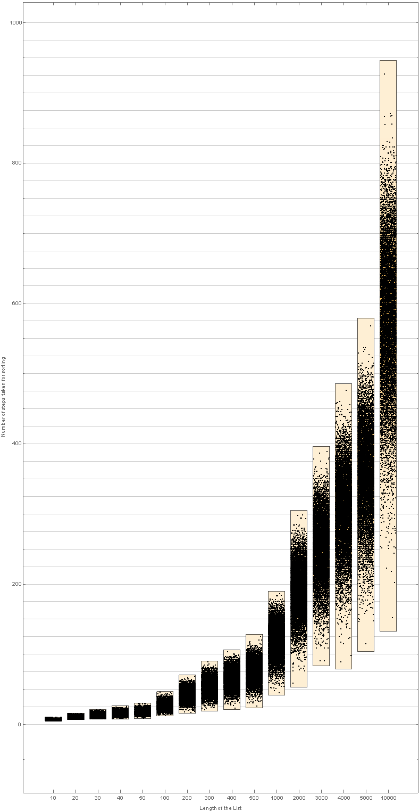
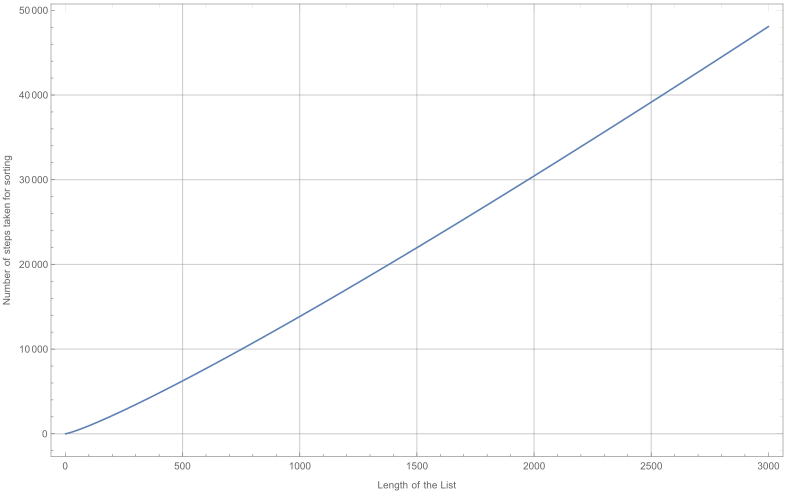

Suppose we are given a set of n distinct values \(x_1, ..., x_{n}\) and we desire to put these values in increasing order or, as it is commonly called, to sort them. An efficient procedure for accomplishing this is the quick-sort algorithm, which is defined recursively as follows:
Letting \(S_i\) denote the set of elements smaller than \(x_i\), and \(^{-}S_i\) the set of elements greater than \(x_{i}\), the algorithm now sorts the set S_{i} and the set \(^{-}S_i\). The final ordering, therefore, consists of the ordered set of the elements in \(S_{i}\), then \(x_{i}\), and then the ordered set of the elements in \(^{-}S_{i}\).
For instance, suppose that the set of elements is 10, 5, 8, 2, 1, 4, 7.
We start by choosing one of these values at random (that is, each of the 7 values has probability of \(\frac{1}{7}\) of being chosen). Suppose, for instance that the value 4 is chosen.
This part is just to see if the code is working properly. For the simulation, I have written two implementations of Quick-Sort. One in python and another one in Mathematica. I would be using the Python version here for the actual sorting and the tracking of the sorting while importing the same file into Mathematica for the graphics. Here are 10 instances of a sorting sequence of a randomly sampled sequence of numbers from 1 to 200. Note how the selection for each of the instances is random
All the animations are together ~20MB in size, so it till take a while before they all load. Until they fully load they might appear nonsensical :)

import datetime
def TimeTagMessage(string:str):
print(datetime.datetime.utcnow().__str__() + " " + string)
def _pivot(_list: list):
_pivotPosition = randrange(0, len(_list))
_skippedRange = list(range(0, len(_list)))
_skippedRange.pop(_pivotPosition)
_pivotValue = _list[_pivotPosition]
_pivotList = [_pivotValue]
_prePivotList = []
_postPivotList = []
for _i in _skippedRange:
if _list[_i] < _pivotValue:
_prePivotList.append(_list[_i])
elif _list[_i] > _pivotValue:
_postPivotList.append(_list[_i])
elif _list[_i] == _pivotValue:
_pivotList.append(_list[_i])
return [_postPivotList] + _pivotList + [_prePivotList]
def QuickSort(_list: list):
_list = [_list]
while someListQ(_list):
for i in range(0, len(_list)):
if ListQ(_list[i]):
__pivot = _pivot(_list[i])
_list.pop(i)
for r in __pivot:
if not ListQ(r) or len(r) != 0:
_list.insert(i, r)
return _list
def QuickSortTrack(_list: list, fileName: str):
TimeTagMessage("Opening file")
__quickSortExport = open(fileName, 'w')
_list = [_list]
TimeTagMessage("Sorting the input list")
TimeTagMessage("Writing the tracking list to the file")
while someListQ(_list):
for i in range(0, len(_list)):
if ListQ(_list[i]):
__pivot = _pivot(_list[i])
_list.pop(i)
for r in __pivot:
if not ListQ(r) or len(r) != 0:
_list.insert(i, r)
__quickSortExport.write("%s\n" % _list)
TimeTagMessage("Closing the file and wrapping up")
TimeTagMessage("Export complete ;)")
pivotedList[list_List] :=
Module[{pivotPosition, pivotValue, pivotList, prePivotList, postPivotList, skippedRange, length = Length@list, pivotedList},
pivotPosition = RandomChoice[Range[1, length]];
pivotValue = list[[pivotPosition]];
pivotList = {pivotValue};
prePivotList = {};
postPivotList = {};
skippedRange = Delete[Range[length], pivotPosition];
Table[Piecewise[
{
{AppendTo[pivotList, list[[r]]], list[[r]] == pivotValue},
{AppendTo[prePivotList, list[[r]]], list[[r]] < pivotValue},
{AppendTo[postPivotList, list[[r]]], list[[r]] > pivotValue}
}], {r, skippedRange}];
pivotedList = Join @@ {{postPivotList}, pivotList, {prePivotList}};
pivotedList
];
QuickSortTrack[listIn_List]:=Module[{list = {listIn}, pivotOut, tracker = {}},
While[someListQ[list],
Table[
If[ListQ[list[[q]]],
pivotOut = DeleteCases[pivotedList[list[[q]]], {}];
list = Drop[list, {q}];
Table[list = Insert[list, pivotOut[[s]], q], {s, 1, Length@pivotOut}]];, {q, 1, Length@list}];
AppendTo[tracker, list];];
Return@tracker
];
QuickSort[listIn_List]:=Module[{list = {listIn}, pivotOut},
While[someListQ[list],
Table[
If[ListQ[list[[q]]],
pivotOut = DeleteCases[pivotedList[list[[q]]], {}];
list = Drop[list, {q}];
Table[list = Insert[list, pivotOut[[s]], q], {s, 1, Length@pivotOut}]];, {q, 1, Length@list}];
];
Return@list
];
If you have seen the question, we see that Quick-Sort is based on random selection of the elements of the list. This means that if we sort out the same list many times, the number of steps needed to sort the same list is a random variable. Also we will observe how the distributions of number of steps as the length of the list increases.
Approach: I will be modifying the QuickSortTrack to make it QuickSortTrackSteps. This only outputs the number of steps that happened to pass by and not the actual list.
Reading the chart: The chart shows the distributions of the number of steps taken to sort a list using the Quick-Sort algorithm. Quite an interesting result. Also observe that the variance also increases with the length of the list.
Theoretical Expectations: According to the text, the expected values vary as ∼ 2(n + 2) log(n + 2) where ‘n’ is the length of the list that we are trying to sort.
Warning: DO NOT compare the plot below to the chart above point to point because the plot below is the plotted for the entire range and the chart above is done for select list lengths with lots of exclusions.

ClearAll[sequenceHuePlot]
sequenceHuePlot[list_List] := Module[{length = Length@list},
Graphics[Table[{Hue[0.8 list[[r]]/length], EdgeForm[None], Opacity[0.8], Rectangle[{r - 1, 0}, {r, 0.1 length}]}, {r, 1, length}]]]
Module[{path = NotebookDirectory[] <> "animation_data", files, tags}, files = FileNames["*.txt", path];
tags = Last[StringSplit[StringDelete[#, path], {"_", ".txt"}]] & /@ files;
Parallelize[
MapThread[
Module[{data = ToExpression[StringSplit[StringReplace[Import[#1], {"[" -> "{", "]" -> "}"}], "\n"]]},
data = Flatten /@ data;
Export[StringReplace[#1, ".txt" -> ".gif"], sequenceHuePlot /@ data, ImageSize -> 700, "DisplayDurations" -> 1]
] &, {files}]]
]
I had an awesome time making this post (worked through a headache) 😉